埼玉県鴻巣市 川里工業団地内・1964年創立
箱の形から、
一緒に考えます。
ダンボールケースと印刷紙器のオーダーメイドです。A式（みかん箱）からワンタッチ式、タトウ式まで、中身と作業に合わせて形を選びます。ダンボール製のパレットやケーブルドラムのような、箱ではないものも作ります。
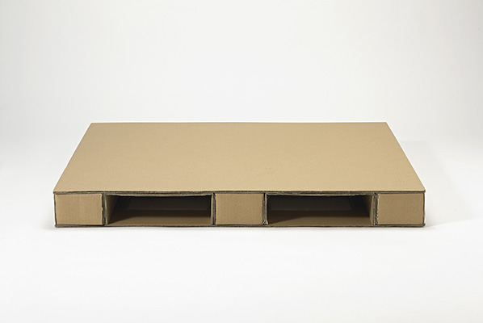
1964年
創立（半世紀以上）
45名
従業員数
7形状
主な箱の形
4,260㎡
本社工場の敷地
PRODUCTS
つくっているもの
ダンボールケース、印刷紙器の製造販売。梱包資材・物流機器の販売。梱包・発送業務。包装品に関する企画・立案・設計。
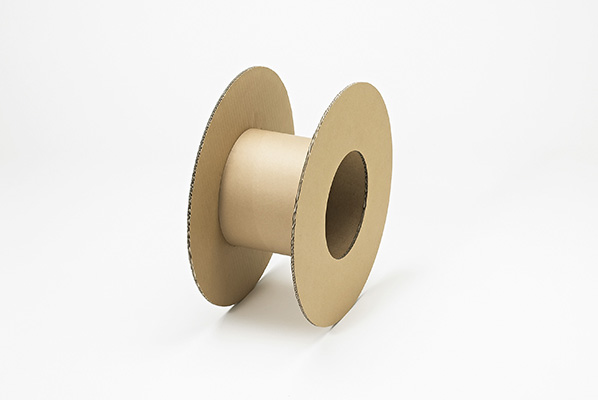
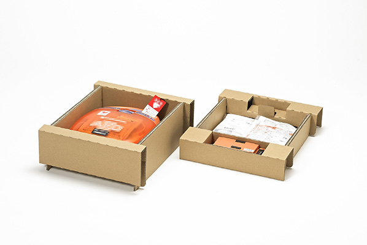
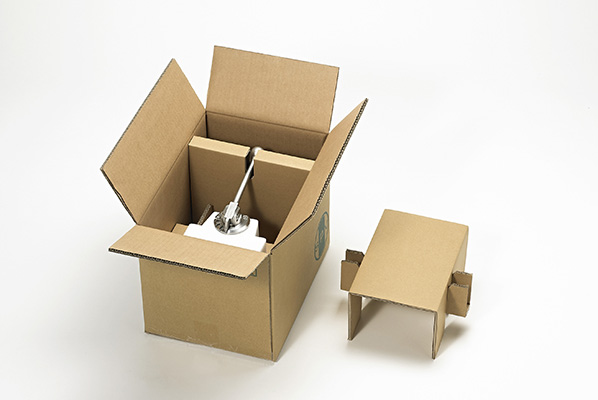
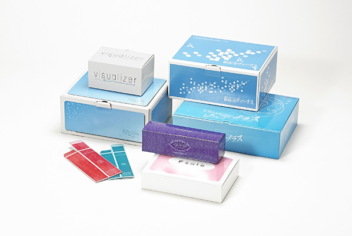
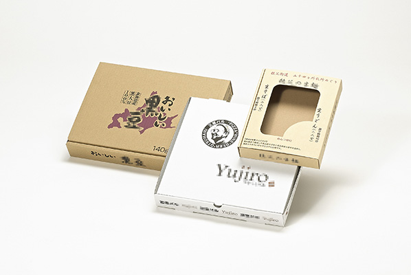
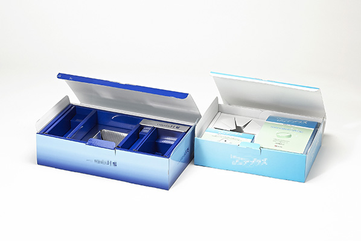
BOX STYLES
箱の形は7種類から
形によって、コスト・強度・梱包作業の速さが変わります。中身と現場に合わせて選びます。
| 形状 | 特徴 | 向いている用途 |
|---|---|---|
| A式（みかん箱） | 最も一般的。上下をテープで封緘。抜型が不要で、印刷無しなら初期コスト不要 | 汎用。コストパフォーマンス重視のとき |
| B式（差し込み式） | 蓋や底を差し込んで組み立てる。ダブルロックや切り込みも設計可 | ソフトウェア、小型・軽量な商品 |
| B式（アメリカンロック式） | 底が組底。テープ貼り無しで組み立てられる。B式で一番の強度 | 効率的な梱包作業が必要なとき ※重すぎると底が抜ける恐れ |
| B式（ワンタッチ式） | 底2か所を糊貼り。開くと自動的に組み上がる | 梱包効率を最優先するとき |
| C式（身・蓋） | 丈夫で高級感がある。再開封性が求められる箱に ※ほぼ2箱分のコスト | 贈答品、ギフトケース |
| N式（組立箱） | 1枚を型抜きした組立式。接合部が無く、抜型を使う箱の中では安価 ※深さのある箱には不向き | 薄手の商品 |
| タトウ式（ヤッコ型） | 風呂敷のように包み込む | 書籍、CD・DVDなど薄く平らなもの |
※ A式以外は抜型を作成するため、初回のみA式に比べて納期がかかります。
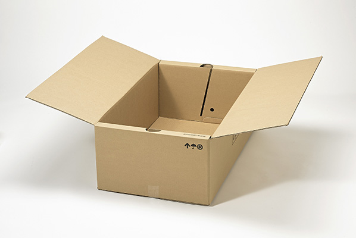
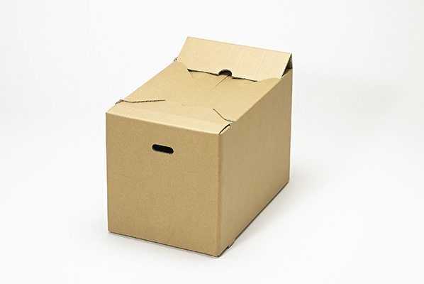
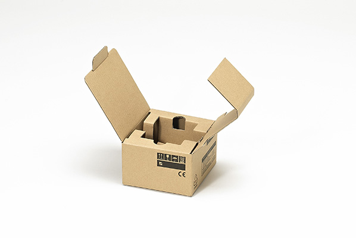
MATERIALS
材質と重さ
ダンボールは、表裏の「ライナー」に、波状に段繰りした「中芯」を貼り合わせたものです。接着にはトウモロコシを原料としたコーンスターチを使います。材質によって強度と重さが変わります。
ライナーの強度
D4＜C5＜K5＜K6＜K7
K＝クラフト（現在はクラフトパルプ＋古紙）／C＝ジュートで古紙率が高い／D＝ほぼ古紙パルプ。ほかに OP（Oyster Pearl の略：白いライナー）、撥水加工があります。
中芯の強度
120＜160＜180＜MM180＜MM200
120〜180は普通中芯（SCP）、MMは強化中芯。右に行くほど強く、重くなります。
フルート（段）の種類
| 種類 | 厚さ | 特徴 | 用途 |
|---|---|---|---|
| Aフルート | 約5mm | 衝撃吸収性があり、使用頻度が最も高い | 重量が軽い易損品の梱包箱 |
| Bフルート | 約3mm | 硬く潰れ難い。印刷適性が高い | 複雑な形状の組立箱／缶詰・瓶詰・機械部品など重く硬いもの |
| Eフルート | 約1〜1.5mm | 表面が平滑。高度な印刷が可能 | ギフト用美粧印刷箱 |
| ABフルート（Wフルート） | 約8mm | 緩衝性・圧縮強度が高い | 重量物の梱包箱／青果物など含水率の高い内容品 |
| AAフルート | 約10mm | Aフルートを2枚張り合わせたような構造 | 機械部品などの重量物梱包箱 |
1平方メートルあたりの重量
重量は「表ライナー＋中芯＋裏ライナー」の合計です。中芯は波になっており、伸ばすと長くなります（段繰り率）。フルートによって伸び率が変わるため、同じライナーでも重さが変わります。
| ライナー | A | B | E | AB（W） |
|---|---|---|---|---|
| C5 | 532 | 508 | 484 | 820 |
| K5 | 552 | 528 | 504 | 840 |
| K6 | 612 | 588 | 564 | 900 |
| ライナー | A | B | E | AB（W） |
|---|---|---|---|---|
| C5 | 596 | 564 | 532 | 980 |
| K5 | 616 | 584 | 552 | 1000 |
| K6 | 676 | 644 | 612 | 1060 |
※ 掲載している重量はあくまで目安です。紙自体の重さはメーカーや時期によって変動します。詳しくはお問い合わせください。
表と裏がある
表は平滑でほぼ平らに見え、裏はダンボールの筋が見えます。罫線入れ・印刷・抜きなどの加工では表裏の向きが決まっているため、注意が必要です。
目方向がある
ダンボールには目方向が存在し、製品の強度に大きく影響します。細心の注意を払って設計します。
寸法は紙巾から書く
ダンボールの寸法表記には決まりがあり、必ず【紙巾】から記載します（【紙巾】×【流れ】）。
FACILITY
製造設備
| 設備名 | 型式・メーカー | 台数 |
|---|---|---|
| フレキソフォルダーグルアー | PS-32 スーパーフレックス2700（ISOWA） | 1 |
| フレキソプリンタースロッター | EQOS 0.9×2.1（梅谷製作所） | 1 |
| オートフォルダーグルアー | EQOS FG 1.2×2.1（梅谷製作所） | 1 |
| 自動平盤打抜機 | SU-1700（上田紙工機） | 1 |
| ワンタッチケースグルアー | 日光エンジニアリング | 1 |
| ビク抜き機 | — | 1 |
| 二面継グルアー | — | 1 |
| セミオートグルアー | — | 2 |
| ステッチャー | — | 3 |
| オートセットスリッター | 林鉄工所 | 1 |
| パットエース | — | 1 |
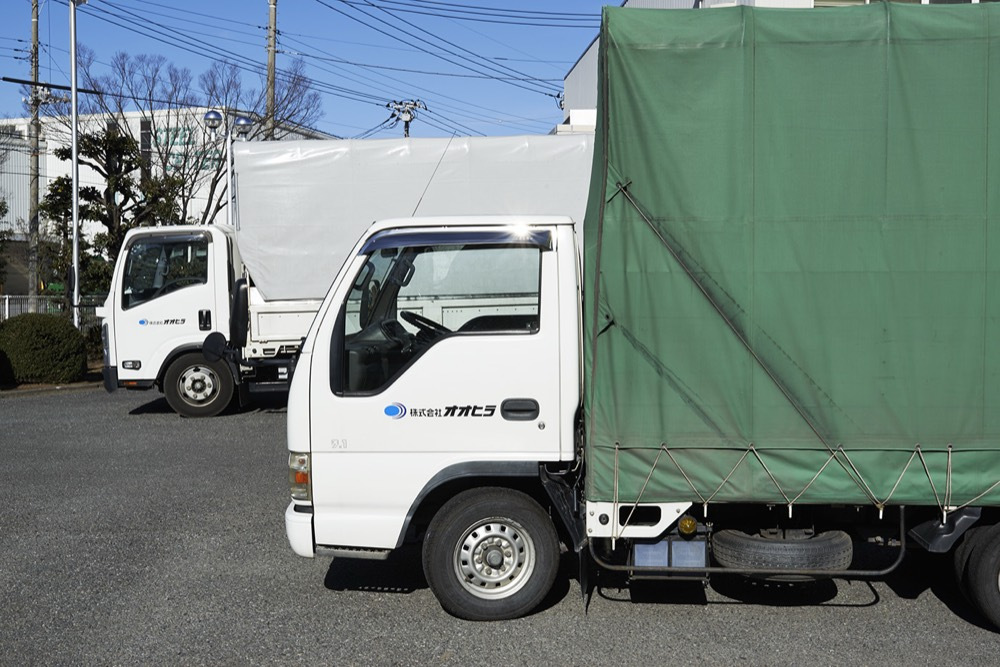
COMPANY
会社概要
お客様に喜んで頂くことを願いながら半世紀
当社の経営理念の中に、「会社の繁栄はお客様に喜ばれ、社会に貢献することによりもたらされるものである。」という一文があります。人は自らの生活の安定と向上のため、より良い未来のために働きます。もちろん、私たちも会社の繁栄を心から願っています。しかし、会社の繁栄は「お客様に喜ばれること」「社会に貢献すること」無しにはあり得ないことを私たちは知っています。
— 代表取締役 弓田 一郎
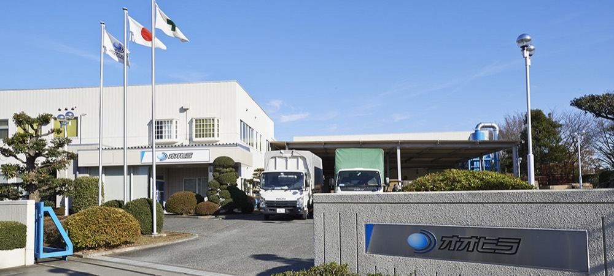
- 名称
- 株式会社オオヒラ
- 所在地
- 〒365-0001 埼玉県鴻巣市赤城台362-27 川里工業団地内
TEL 048-569-1131 ／ FAX 048-569-1134 - 設立
- 昭和39年（1964年）10月19日
- 資本金
- 2,000万円
- 代表者
- 代表取締役社長 弓田 一郎
- 従業員数
- 45名
- 事業内容
- ダンボールケース、印刷紙器の製造販売
梱包資材、物流機器の販売
梱包、発送業務
包装品に関する企画・立案・設計 - 土地建物
- 本社工場 敷地 4,260㎡／建物 3,210㎡
物流センター 敷地 2,128㎡／建物 1,485㎡ - 取引銀行
- 埼玉りそな銀行 鴻巣支店／武蔵野銀行 行田支店／埼玉縣信用金庫 鴻巣支店／商工組合中央金庫 熊谷支店
- 営業時間
- 9:00〜17:00（日・土（不定期）・祝・年末年始は休み）
沿革
- 昭和36年
- 現取締役会長 弓田茂が神奈川県川崎市で弓田紙器を創業
- 昭和39年
- 埼玉県鴻巣市に移転し大平段ボール株式会社を設立。弓田三郎が代表取締役社長に就任
- 昭和60年
- 弓田茂が代表取締役社長に就任し、弓田三郎は取締役会長に就任
- 昭和62年
- 資本金を400万円に増資
- 平成3年
- 梅谷製作所製プリンタースロッターを増設
- 平成6年
- 工場隣接地を取得し物流倉庫を建設
- 平成7年
- 上田紙工機製 自動平盤打抜き機を導入
- 平成9年
- 資本金を1,000万円に増資
- 平成11年
- 弓田一郎が代表取締役に就任し、弓田茂は代表取締役会長に就任
- 平成12年
- 社名を株式会社オオヒラに改める
- 平成13年
- ISOWA製フレキソフォルダーグルアー（PS32スーパーフレックス）、林鉄工所製オートセットスリッターを導入
- 平成18年
- サンプルカッター（ヒューマンテック製）を導入
- 平成24年
- 鴻巣市川里工業団地内に工場を取得
- 平成25年
- 本社工場を川里工業団地内に移転（旧工場を物流センターとする）。梅谷製作所製フレキソプリンタースロッター（EQOS 0.9×2.1）、同オートフォルダーグルアー（EQOS FG1.2×2.1）を導入
中身が決まっていれば、箱は決められます。
形・材質・印刷の有無で、コストも強度も変わります。サンプルカッターがあるので、試作をお見せしてから決められます。お電話いただければ、すぐに営業がお伺いします。
048-569-1131
FAX 048-569-1134／営業時間 9:00〜17:00
〒365-0001 埼玉県鴻巣市赤城台362-27 川里工業団地内